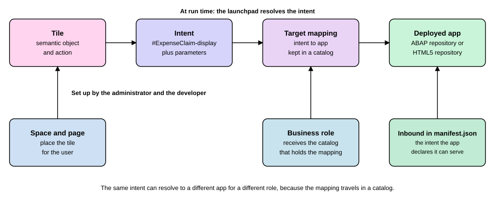

Deploying Apps to the SAP Fiori Launchpad
|
This content was generated with the assistance of AI and should be verified against the official documentation before being relied on in production. |
You have built a small web app, for example a screen that lists expense claims. On your own machine it runs from a
folder. Nobody else can use it until two separate things happen. First, the files of the app must be put on a server
that can send them to a browser. Second, the SAP Fiori launchpad, the screen of tiles that employees start their work
from, must be told that the app exists, what it is called, which tile starts it and who may see that tile. This page
walks through both steps in plain words. It covers the two usual destinations: the SAPUI5 ABAP repository inside an ABAP
system (on premise or Private Edition, here SAP S/4HANA 2025 FPS02 with SAP_UI 7.53 or newer) and the HTML5
Application Repository on SAP Business Technology Platform (SAP BTP), which feeds SAP Build Work Zone, standard
edition. The tools are SAP Fiori tools (current documentation) and the SAPUI5 documentation of release 1.154. The
local parts of this page, the app descriptor and the build, were run for real in a scratch folder on 2026-11-13. The
parts that need an ABAP system or an SAP BTP account are shown from the official documentation and are labeled as not
run here.
Before you read
-
SAP Fiori Launchpad: what spaces, pages, sections, tiles and catalogs are.
-
CAP Getting Started: a CAP project is one source of apps to deploy, and it uses the Node.js tools this page also uses.
-
CAP Deployment and MTA: what a multitarget application archive is, which the BTP path of this page relies on.
-
RAP Services and OData V4: the OData service that a deployed Fiori elements app talks to in the running example.
-
Users, Roles and Authorizations: what a role is, because a tile reaches a person through a role.
-
Transports and Change Management: what a transport request is, because an ABAP deployment records its objects in one.
Key terms
-
SAPUI5 ABAP repository: the place in an ABAP system where the files of a SAPUI5 app are stored and served from.
-
HTML5 Application Repository: the SAP BTP service that stores the static files of web apps and serves them securely.
-
App descriptor: the file
manifest.jsonof an app, which holds its id, title, version and navigation settings. -
Semantic object: a business thing such as an expense claim that apps and links refer to by name.
-
Intent: a semantic object plus an action, written like
#ExpenseClaim-display, that the launchpad turns into a concrete app at run time. -
Target mapping: the setting that says which app an intent starts.
-
Catalog: a collection of tiles and target mappings that is assigned to roles.
-
SAP Build Work Zone: the SAP BTP service that offers a launchpad site to which deployed HTML5 apps are added.
Deploying is two jobs, not one
A web app made with SAPUI5 or SAP Fiori elements is, at the end of the build, only a folder of static files: an
index.html, JavaScript, style sheets, translation files and the app descriptor manifest.json. To "deploy" it you do
the following two jobs, in this order.
-
Host the files. Upload the folder to a repository that a server can serve. In an ABAP system that repository is the SAPUI5 ABAP repository. On SAP BTP it is the HTML5 Application Repository.
-
Register the app with the launchpad. Give the app an intent (a semantic object and an action), create a tile and a target mapping, put them in a catalog, and give the catalog or the space that holds the tile to a role. Only then does a tile show up for a user.
The SAP Fiori tools documentation describes the same split for its two targets. For ABAP the system "provides all
functionality to run the application", such as hosting, routing and authentication, and the deployment artifact is just
the zipped dist folder of the project. On SAP BTP the HTML5 Application Repository stores the app, and other services
(for example the destination service) have to be created next to it.
webapp with manifest.json] --> B[ui5 build
dist folder] B --> C{Target} C -->|ABAP system| D[Upload to the SAPUI5 ABAP repository
Fiori tools deploy or report] C -->|SAP BTP| E[MTA archive
cf deploy to the HTML5 Application Repository] D --> F[Technical catalog:
tile and target mapping
Business catalog, role, space, page] E --> G[Work Zone Channel Manager:
refresh HTML5 Apps provider
Content Manager: group, catalog, role, site] F --> H[Tile in the launchpad] G --> H
The picture is a reading aid built from the documentation pages cited in this section and the next ones, not a screenshot of any tool.
Step zero: tell the launchpad what the app can do
Before any upload, the app itself declares which intent it can serve. This is done in the sap.app part of
manifest.json, in a section called crossNavigation with inbounds. The SAPUI5 documentation of the manifest says
that each inbound has a unique key and that semanticObject and action are mandatory in it; title, subTitle,
icon and deviceTypes can override the app’s own values for the tile; and a mandatory signature lists the
parameters that the app accepts and says what to do with additional ones (allowed, ignored or notallowed, for
example). The word inbound means a navigation that arrives at this app. An outbound is the opposite: an intent that the
app can trigger to move to another app.
An intent is written as #<semantic object>-<action>?<parameter>=<value>. The SAP help page on intent-based
navigation gives the example #SalesOrder-displayFactSheet?SalesOrder=27. The launchpad does not put the technical
address of the target app in the URL. It keeps the intent in the URL hash and looks up the real address at run time.
The page gives these reasons for the detour: a different role can see a different app or view for the same intent, a
target can be changed without changing app code, apps have different life cycles and cannot assume that another app is
deployed, and a legacy app can later be replaced by a SAPUI5 app without users noticing.
The lab app of this page is a tiny SAPUI5 app named zexp.claims, a stand-in for the expense claim screens of the
running example (the real one would be a Fiori elements app on the service binding ZUI_ExpClaim_O4). Its descriptor
declares one inbound, ExpenseClaim-display.
{
"_version": "1.65.0",
"sap.app": {
"id": "zexp.claims",
"type": "application",
"i18n": "i18n/i18n.properties",
"title": "{{appTitle}}",
"applicationVersion": { "version": "1.0.0" },
"crossNavigation": {
"inbounds": {
"displayClaims": {
"semanticObject": "ExpenseClaim",
"action": "display",
"title": "{{appTitle}}",
"signature": {
"parameters": {},
"additionalParameters": "allowed"
}
}
}
}
},
"sap.ui": {
"technology": "UI5",
"deviceTypes": { "desktop": true, "tablet": true, "phone": true }
},
"sap.ui5": {
"rootView": { "viewName": "zexp.claims.view.App", "type": "XML", "async": true, "id": "app" },
"dependencies": {
"minUI5Version": "1.136.0",
"libs": { "sap.m": {}, "sap.ui.core": {} }
},
"models": {
"i18n": {
"type": "sap.ui.model.resource.ResourceModel",
"settings": { "bundleName": "zexp.claims.i18n.i18n" }
}
}
},
"sap.cloud": { "service": "zexp.claims.service" }
}The last line, sap.cloud, is only needed for the SAP BTP path described later. The signature with empty
parameters and additionalParameters set to allowed is the same shape that the SAP Build Work Zone documentation
shows for its example inbound.
The UI5 Tooling project file for the lab names the framework and the libraries. The libraries are listed only here, not
in package.json: listing them in both places makes ui5 serve stop with a duplicate framework dependency error.
specVersion: "4.0"
metadata:
name: zexp.claims
type: application
framework:
name: OpenUI5
version: "1.154.0"
libraries:
- name: sap.m
- name: sap.ui.core
- name: themelib_sap_horizonThe lab uses OpenUI5 1.154.0 from npm so that nothing needs an account. A real ABAP system serves the SAPUI5 release that is installed there, which is why the SAP Fiori tools documentation tells you to test more carefully when the SAPUI5 version of the target system is lower than the one you developed against.
Build the app and check the intent
The build packs the app into a dist folder. It is the same folder that the SAP Fiori tools later zip and upload. This
listing was run in a copy of the lab with @ui5/cli 4.0.73 and Node.js 24.21.0 on 2026-11-13.
npm install
npm run build
find dist -type f | sortThe real output of the build (the first lines are trimmed) and of the file listing:
> expense-claims-ui@1.0.0 build
> ui5 build --clean-dest
info graph:helpers:ui5Framework Using OpenUI5 version: 1.154.0
info ProjectBuilder Preparing build for project zexp.claims
info ProjectBuilder Target directory: ./dist
info Project 1 of 1: ❯ Building application project zexp.claims...
info zexp.claims › Running task minify...
info zexp.claims › Running task enhanceManifest...
info zexp.claims › Running task generateComponentPreload...
info ProjectBuilder Build succeeded in 64 ms
dist/Component-dbg.js
dist/Component-preload.js
dist/Component-preload.js.map
dist/Component.js
dist/Component.js.map
dist/i18n/i18n.properties
dist/i18n/i18n_en.properties
dist/index.html
dist/manifest.json
dist/view/App.view.xmlTwo things are worth noticing. The manifest.json is at the root of dist, which matters because the SAP
documentation for the upload reports says to upload the content of the webapp or dist folder without the folder
itself, so that the manifest is at the root of the repository entry and the app index can be loaded. And the build
produced Component-preload.js, a bundle that makes the app load faster.
A small Node.js script can read the built descriptor and print the intents that the app declares. This is the same
information the launchpad tools read when you add the app. It was run against the dist folder above.
import { readFileSync } from "node:fs";
const manifest = JSON.parse(readFileSync(process.argv[2], "utf8"));
const inbounds = manifest["sap.app"].crossNavigation?.inbounds ?? {};
for (const [key, inbound] of Object.entries(inbounds)) {
console.log(`${key}: #${inbound.semanticObject}-${inbound.action}`);
}
console.log("sap.cloud.service:", manifest["sap.cloud"]?.service);node list-intents.mjs dist/manifest.jsondisplayClaims: #ExpenseClaim-display
sap.cloud.service: zexp.claims.serviceSource: Intent-Based Navigation
Path A: the SAPUI5 ABAP repository
When the app belongs to an ABAP system, for example to the S/4HANA system that also hosts the RAP service, the files go into the SAPUI5 ABAP repository. The SAPUI5 documentation explains that the SAPUI5 ABAP repository is realized as a BSP application: the upload creates or updates a BSP application, and from there the app can be used in the launchpad. Several routes lead into it.
| Route | What it is | When it fits |
|---|---|---|
SAP Fiori tools ( |
Zips the |
The normal developer route from SAP Business Application Studio or Visual Studio Code. |
Report |
Uploads, downloads or deletes a single app from the local file system, run inside the ABAP system. |
A one-off upload by an administrator, for example on a system where the OData route is not available. |
Reports |
Upload one app, or several apps at once, from a zip or war archive on an HTTP web server. |
Build servers that publish an archive. |
Function module |
Offers the functions of the reports as an RFC-enabled call. |
Calls from outside the system, for example a Maven build. |
The SAP Fiori tools route uses the OData service /UI5/ABAP_REPOSITORY_SRV, which exists from SAP_UI 753. Two
things must be in place before it works. The service must be activated in the back end (transaction SICF, the node ui5
under the namespace of the service) and reachable from the developer machine, and the developer needs the authorization
S_DEVELOP for the SAPUI5 ABAP repository. The same service is meant for build servers: the documentation names git
plus Jenkins as the typical setup and says the zip archive travels base64-encoded in a property named ZipArchive.
Generate the deployment configuration
The deployment is configured once per project. In SAP Business Application Studio or Visual Studio Code you run the command palette entry Fiori: Add Deployment Configuration. From a terminal the same wizard starts with this command in the project folder.
npx fiori add deploy-configThis listing needs an ABAP system to answer the prompts, so it was not run here: requires an SAP system; not run here.
The wizard asks for the target (ABAP), the system or destination, the client, the name of the app in the SAPUI5 ABAP
repository, an optional description, the package and the transport request. For the transport request you can type one,
choose one of the open requests that the wizard reads from the system, have a new one created, or have it created
during the first deployment. The wizard writes a ui5-deploy.yaml file, derived from your ui5.yaml, and adds a
deploy script to package.json, so that npm run deploy works afterwards. The same page notes a limit worth knowing:
the deploy task does not create transports on its own when the target package requires one, so it needs an existing
transport in that case. The wizard options above that create a transport are tools around this task.
A ui5-deploy.yaml for the running example, adapted from the sample on the same documentation page, looks like this. The
system name is a placeholder, and the user name and password are read from environment variables, never written into the
file.
builder:
customTasks:
- name: deploy-to-abap
afterTask: replaceVersion
configuration:
target:
url: https://XYZ.sap-system.corp:44311
client: 200
auth: basic
credentials:
username: env:XYZ_USER
password: env:XYZ_PASSWORD
app:
name: ZEXP_CLAIMS
package: ZEXP_UI
transport: XYZQ300582
exclude:
- .*\.test.js
- internal.mdRequires an SAP system; not run here. The names ZEXP_CLAIMS, ZEXP_UI and XYZQ300582 are examples of the
running example, chosen for this page, and the host is the placeholder of the SAP sample. The documentation explains
the effect of its own sample: all files of dist are uploaded except those ending in .test.js and internal.md, and
the app is created or updated under its name in the package, with every change recorded in the transport request.
The open-source package behind the deployment, @sap-ux/deploy-tooling, shows the same idea with the task name
abap-deploy-task and adds a command line, deploy, that runs the upload separately from ui5 build. Its README lists
options such as --url, --client, --package, --transport, --name, --test (let the back end report deployment
errors without deploying), --cloud (the target is an ABAP Cloud system), --archive-path and --archive-folder. The
installed version was checked in the lab copy; nothing was uploaded.
npm install --save-dev @sap-ux/deploy-tooling
npx deploy --version1.0.60Source: open-ux-tools: deploy-tooling
Both task names appear in SAP’s own material. The Fiori tools help page and the @sap/ux-ui5-tooling package use
deploy-to-abap, the README of @sap-ux/deploy-tooling uses abap-deploy-task. If you copy a sample, use the task
name that the version of the tools installed in your project documents, and let the wizard write the file.
Deploy and find the app
The deployment itself is a build plus an upload. From the project folder you run the command below, or the command palette entry Fiori: Deploy Application. If the back end asks for authentication, a prompt for user name and password appears in the terminal.
npm run deployRequires an SAP system; not run here. According to the documentation, a successful deployment prints the address of the
deployed app, and the sample log shows an address of the form https://host:port/sap/bc/ui5_ui5/sap/app/index.html.
That address opens the app directly, without the launchpad. It is useful to check the upload, but users should reach
the app through a tile. A ready-made archive can be uploaded with npx fiori deploy --archive-path 'somefile.zip' or
with --archive-url, which is how a pipeline can separate building from deploying.
The documentation lists two typical failures. If the back end has SAP_UI 7.53 or newer but the repository service
cannot be reached, check that the service is activated. If the service is reachable but every deployment fails with
"Request failed with status code 400", one common cause is a forgotten virus scan profile, which is configured in the
transaction /IWFND/VIRUS_SCAN; the transaction /IWFND/ERROR_LOG shows the server logs.
Make the launchpad know the app (ABAP)
The files are now in the repository, but no tile exists. SAP’s documentation of the launchpad on the ABAP platform describes the setup as a sequence of steps, which this page applies to the running example.
-
Identify the app that is the navigation target. Here it is
ZEXP_CLAIMS. -
Identify a semantic object. You may reuse one that SAP ships or create your own. Here it is
ExpenseClaim. -
Create a catalog or use an existing one.
-
Add a target mapping. In it you map the intent
#ExpenseClaim-displayto the navigation target, the app. -
Optionally create a tile with its title, description and icon and the semantic object and action. The step can be skipped when the app is only reached from another app (app-to-app navigation).
-
Assign the catalog that holds the tile and the target mapping to a role, in role maintenance (transaction PFCG).
Source: Setting Up Navigation
Semantic objects shipped by SAP and your own live in separate tables. The documentation names the transaction
/UI2/SEMOBJ_SAP to display the shipped ones and /UI2/SEMOBJ to display or create your own. To create a custom one you
go in customizing (transaction SPRO) to UI Technologies, SAP Fiori, Setting Up Launchpad Content, Setting Up Technical
Catalogs, Define Custom Semantic Objects for Navigation, and add a new entry. An entry with the same key as a shipped
object overwrites its attributes.
The tools for the other steps changed with the move from groups to spaces and pages, which the page SAP Fiori Launchpad explains. The documentation of the launchpad for the ABAP platform 2025 lists them as follows.
| Tool | Use |
|---|---|
Launchpad app manager (transaction |
Creates launchpad app descriptor items, which comprise tiles and target mappings, in technical catalogs. |
Launchpad content manager (transaction |
Manages business catalogs, which hold references to the tiles and target mappings of technical catalogs. |
Apps Manage Launchpad Spaces and Manage Launchpad Pages |
Define the structure and layout of the launchpad with spaces and pages. |
Launchpad designer (deprecated) |
The older tool. The same page says its features are replaced by the tools above and will be removed in a future version. |
The split between a technical catalog and a business catalog is the part newcomers find hardest, so keep this picture in mind. The technical catalog is where the developer-facing items live: the tile and the target mapping that describe how an app is started. The business catalog is a selection of those items for a group of users. The role then carries the business catalog, and a space and a page place the tile on the screen.

When the user clicks the tile, the launchpad target resolution service resolves the intent to the concrete target. The documentation says the administrator configures these targets as target mappings, which are assigned to users as part of a catalog and therefore to roles, and that this is why the same intent can resolve differently for different roles. A manager can be sent to one view of an app and a regular employee to another, with the same tile.
Source: Intent-Based Navigation
The SAP Fiori tools can also write the descriptor part for you. The command palette entry Fiori: Add Fiori Launchpad
Configuration starts a wizard that updates manifest.json with the inbound navigation property that the launchpad
needs. It asks for the semantic object (a name you choose), the action (the documentation shows display as the
default), the title and an optional subtitle. From a terminal the module @sap-ux/create offers the same function.
Path B: the HTML5 Application Repository on SAP BTP
An app that runs on SAP BTP is stored in the HTML5 Application Repository. SAP describes it as the central store of the
static content of HTML5 apps. The apps keep a configuration file for run time (xs-app.json) that defines the
authentication method, required authorizations and routes to back ends. The documentation lists benefits that matter for
a launchpad: the static content can be updated without downtime for running sessions, content is versioned, and content
is cached for speed. Two limits apply: an app deployed through the service plan app-host is limited to 100 MB per
service instance, and the content of a public app can be shared with other subaccounts, so personal data does not belong
in it.
Apps reach the repository through a multitarget application (MTA) archive, which the page CAP Deployment and MTA explains. For a Fiori project, SAP Fiori tools write the MTA configuration. You run the same wizard as before and choose Cloud Foundry as the target, then give the destination name. The documentation lists what must be installed first: the MTA build tool, the Cloud Foundry command line client, the MultiApps plug-in, a correctly configured destination to the back end, and the right to deploy.
npx fiori add deploy-config
npm run build
npm run deployRequires an SAP BTP account; not run here. According to the documentation, npm run build is run in the folder of the
MTA project (the one that holds mta.yaml) and npm run deploy takes a few minutes. For an app that lives in an MTA
project with other modules, SAP recommends creating the MTA file first and then generating the app in a subfolder, so
that several apps can share it.
Behind the scenes, a module called the HTML5 application deployer copies the app into the repository. The SAP BTP
documentation describes it as an npm module, @sap/html5-app-deployer, with a resources folder that holds one folder
per app, each with its own manifest.json and xs-app.json:
myAppsDeployer
+ node_modules
- resources
- app1
index.html
manifest.json
xs-app.json
- app2
...
package.json
manifest.yamlRequires an SAP BTP account; not run here. The same page says that sap.app.id and sap.app.applicationVersion.version
in the descriptor become the application name and version in the repository (the version has the form xx.xx.xx), and
that the deployer is not recommended for content larger than 10 MB, for which the generic application content deployer
or an asynchronous upload is advised. SAP also describes a newer service, the Application Frontend service, with its own
command line tool, afctl, in a tutorial that requires Node.js 22.6 or newer and a BTP account; this page does not
cover it further.
Make SAP Build Work Zone know the app
On SAP BTP the launchpad is a site of SAP Build Work Zone, standard edition. The deployment does not reach the site automatically. The documentation names the steps for the HTML5 Apps content provider, which reflects the local repository of the subaccount.
-
Develop the app and expose it in
manifest.json: the descriptor needssap.cloud.service(mandatory, and it must be unique across HTML5 repository instances, MTA files and destinations) and an inbound withsemanticObjectandaction(mandatory). Thesap.app.idmust be unique in the subaccount, andminUI5Versionmust be an explicit version number, not a placeholder like${sap.ui5.dist.version}. -
Deploy the app to the same subaccount in which Work Zone is subscribed.
-
In the Channel Manager, update the HTML5 Apps content provider. This is needed after every change, such as a new app or a changed destination.
-
In the Content Explorer, add the app to your content. In the Content Manager, assign it to a group and, optionally, a catalog, and then to a role.
-
From the Site Directory, make a site that contains the role, and open the site.
Requires an SAP BTP account; not run here. The SAP tutorial on adding a deployed app to a site follows the same order and
uses the default role Everyone, which makes the app visible to all users. The tutorial lists as a prerequisite that a
space and a page already exist and are assigned to a role. For a
multi-subaccount setup SAP describes HTML5 business solutions and remote content providers, which federate content by
role; they are outside this page.
The parallel to the ABAP path is close, even though the names differ. A Work Zone group plays the part of a tile collection, a catalog is optional, and the role is what finally decides who sees the app.
| Idea | ABAP launchpad | SAP Build Work Zone, standard edition |
|---|---|---|
Where the files live |
SAPUI5 ABAP repository |
HTML5 Application Repository |
How the app declares the intent |
inbound in |
inbound in |
Where tile and mapping are created |
launchpad app manager (technical catalog) |
Content Explorer and Content Manager |
What bundles content for users |
business catalog, space and page |
group and catalog |
What gives users access |
role in transaction PFCG |
role in the Content Manager |
What must be refreshed |
nothing is refreshed by hand; the upload reports update the SAPUI5 application index |
the HTML5 Apps content provider in the Channel Manager |
Where the book is out of date
The SAP PRESS book on the ABAP RESTful programming model (Haas and Mathew, 1st edition 2019) has a chapter on deploying apps to the launchpad. Its concepts are still the right ones: upload the UI to the front-end server, create technical and business catalogs, create tiles, give users access through a PFCG role, and set up intent-based navigation between two apps. What the book shows and what changed:
-
The deployment tool. The book deploys from SAP Web IDE and also uploads directly into the front-end server. Current SAP Fiori tools run in SAP Business Application Studio and in Visual Studio Code; their own documentation contrasts them with the SAP Web IDE approach. The upload reports still exist, as the SAPUI5 documentation shows.
-
Groups and the launchpad designer. The book creates catalogs, tiles and groups on the launchpad admin page (the designer) and mentions the content manager only as an alternative for catalogs. In the documentation for the ABAP platform 2025 the group-based home page is deprecated in favor of spaces and pages, and the important functions of the designer moved to the app manager and the content manager.
-
Spaces and pages. They do not exist in the book. Today a role needs a space (with pages) to show apps, as the page SAP Fiori Launchpad explains.
-
SAP BTP. The HTML5 Application Repository and SAP Build Work Zone are outside the scope of that chapter.
What can go wrong
| Symptom | Likely cause | What to check |
|---|---|---|
Deployment fails with status code 400 |
Virus scan profile not configured |
Transaction |
Upload cannot reach the repository service |
|
Transaction SICF, node |
Deployment is refused for a package that needs a transport |
The task does not create transports on its own |
Give an existing transport request, or let the wizard create one |
Tile exists but users do not see it |
Catalog or space not assigned to the user’s role |
Role maintenance in PFCG; the space of the role |
Tile shows but the app does not start |
Target mapping missing, or semantic object and action differ from the inbound |
Compare the tile, the target mapping and the |
App does not appear in the Content Explorer |
The HTML5 Apps provider was not refreshed, or the app was deployed to another subaccount than Work Zone |
Channel Manager, and the subaccount of the deployment |
Two apps clash on SAP BTP |
|
Make each value unique in the subaccount |
Summary
-
An app is deployed in two jobs: host its files in a repository, then register it with the launchpad.
-
In an ABAP system the repository is the SAPUI5 ABAP repository, filled by SAP Fiori tools through the OData service
/UI5/ABAP_REPOSITORY_SRVor by the reports such as/UI5/UI5_REPOSITORY_LOAD. On SAP BTP it is the HTML5 Application Repository, filled through an MTA archive. -
The app declares its intent in the
crossNavigationinbounds ofmanifest.json; the launchpad resolves intents through target mappings that sit in catalogs assigned to roles, so the same intent can start different apps for different roles. -
On the ABAP platform 2025 the work is done with the launchpad app manager, the content manager and the apps for spaces and pages, not with the deprecated designer and groups. On SAP BTP it is done in the Channel Manager and Content Manager of SAP Build Work Zone, standard edition.
-
Everything that needs an ABAP system or an SAP BTP account is labeled as not run here. The build and the descriptor check were run locally.
References
-
SAP Fiori tools: Generate Deployment Configuration Cloud Foundry
-
SAPUI5: Deploying SAPUI5 Applications to the SAPUI5 ABAP Repository
-
SAPUI5: Using an OData Service to Load Data to the SAPUI5 ABAP Repository
-
SAPUI5: Manifest (Descriptor for Applications, Components, and Libraries)
-
SAP Fiori launchpad: Defining Semantic Objects for Navigation
-
SAP Build Work Zone: What is the HTML5 Application Repository?
-
SAP Build Work Zone: HTML5 Apps Content Provider (Local Repository)
-
SAP Build Work Zone: Expose HTML5 Applications in SAP Build Work Zone, standard edition
-
ABAP RESTful Programming Model (SAP PRESS), the book consulted for concept coverage